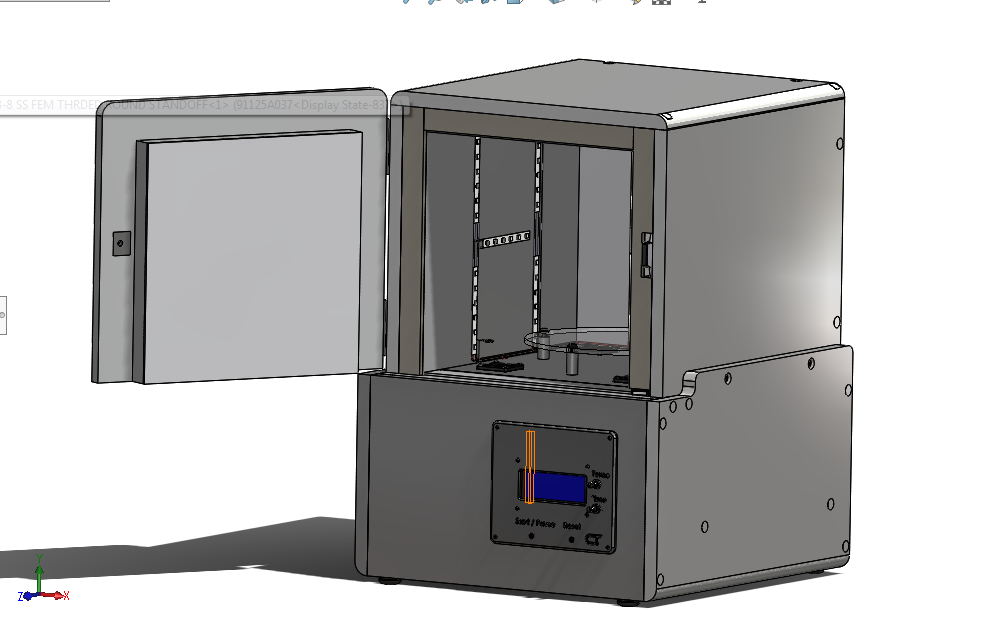

My internship at Columbia Tech exposed gave me a lot of experience with engineering design, working in a diverse team and experience working on the production floor to solve engineering related problems
The main project during the summer of 2017 was to design a cure chamber for an SLA 3D printer for internal use. The only requirements were that it can treat prints requiring a range of temperatures for optimal curing and that the chamber emits ultraviolet light at the required wavelength. My knowledge in robotics influenced me to design this curing chamber so that it can be controlled with an Arduino. My final designed had buttons and knobs to control the temperature, timer and start/stop functions. The heating was controlled by a quartz heating element and the hot air was forced into the curing chamber with 4 fans. This allowed for an even heating of the curing chamber. There was a limit switch that detected the door being open and acted as a hardware shutoff for the Ultraviolet lighting. If the door was opened the lights would shut off to prevent a user from looking straight into ultraviolet LEDs. It also would stop the timer until the user restarted it using the appropriate button. The Arduino automated the heat up process, the curing process and shut off once that process was completed. The status of the curing process was displayed on an LCD in the front. The C++ code can be downloaded below as an example of my work.

In the summer of 2018, I worked on projects involving Metal 3D printing and Radio Repeater systems for skyscrapers. My main tasks were to help build units and create work instructions alongside technicians and other engineers. I helped solve manufacturing engineering problems by editing drawings and inspecting materials. Columbia Tech has many different projects going on in the same workspace so in addition to these projects, I was also exposed to others although I didn't directly help with them.